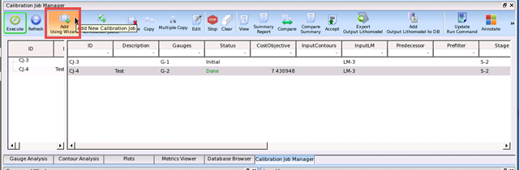
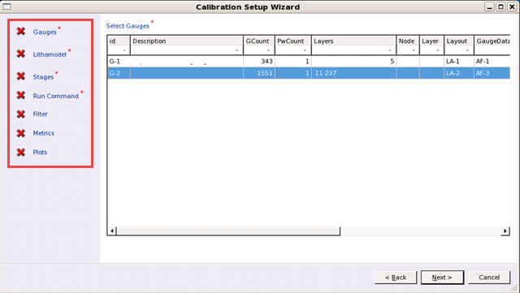

Calibration jobs
are the core of optimization for Calibre nmModelflow. For EUV calibration,
you create multiple concurrent jobs using stages that must be run
in order.
Prerequisites
The database must contain
each of the following items:
A
set of specially prepared gauges in the Gauge Analysis tab,
derived into subsets from the full gauge set
Note: To create subsets for the gauge set, make filters corresponding
to the following configurations.
Table 1. EUV Calibration
Gauge SubsetsSet
|
Select Gauges
|
|---|
1
|
Bossung filter on through-focus data (optional)
|
1+
|
through-focus data that is focus-sensitive
|
2
|
nominal focus data
|
3
|
nominal focus 1D data only
|
4
|
nominal focus 2D data only
|
5
|
1D and 2D gauges at nominal focus, weight
important features
|
A
litho model
A
set of stages from the task “Setting up an EUV Calibration Stage”
Procedure
- Raise the Calibration
Job Manager tab in the main window.
- Click the Add Using
Wizard button.
Figure 1. Calibration Job Manager
(Create a Job)
- Fill out the wizard that appears.
On the initial screen, choose an option:
Contours —
Calibrate using a contour from the Calibre nmModelflow database.
This option is not selectable if there are no contours in the database.
Gauges and Contours — Calibrates
using both gauges and contours.
Gauges —
Calibrates using gauges only.
Click Next to continue.
The components list appears as shown in the following figure.

Tip Components
that are marked with a red asterisk are required. All other components
are optional and you can safely click Next without
adding any items from the list for that component.
- Select a gauge
set from the gauges list, then click Next.
- In the Select Initial Litho
Model screen, choose between two options:
Litho Model from Database —
Displays a list of litho models available in the database.
Choose this option for the Black Border stage, the Bossung Adjust
stage, and the Optics (beamfocus, def_start) stage if you did not
run the Bossung Adjust stage.
Result of a Calibration Job — Displays
the Job list to select the output of another calibration job as
input, in place of a litho model in the database. This option cannot
be selected if there are no other calibration jobs defined.
Choose this option for any stage in the calibration flow after
the first; make the new stage dependent on the previous stage.
Table 2. Dependent
Stages Priority Order Stage Type
|
Order / Gauge Set
|
Uses Gauges Filtered For....
|
|---|
Optics (beamfocus, def_start, focuscenter)
|
1
|
through-focus data that is focus-sensitive
|
Optics (imagediffusion)
|
2
|
nominal focus data
|
Mask (bias)
|
3
|
nominal focus 1D data only
|
Mask (cornerchop)
|
4
|
nominal focus 2D data only
|
Resist
|
5
|
1D and 2D gauges at nominal focus, weight
important features
|
Black Border (optional)
|
Special
|
Black Border data (if available)
|
Click Next. For both choices (Database
or Result), you will be prompted to assign mask layers that were
defined in the litho model to corresponding layers in the layout.
- Select a Stage from the list
of previously-defined stages to run for the new calibration job,
then click Next.
- Select
a run command type from the dropdown list. (A full list of built-in
runscripts is available by clicking the “?” button to access the
online help.) Click Next.
- Select filters for the job
corresponding to the stage (Table 2). Filters reduce the
number of gauges that need to be calibrated, limiting the gauges
to test patterns relevant to the stage. Click Next.
- Optionally, add one or more
metrics to the job. You would do this to assess the quality of the
results by more than just the cost objective. Click Next.
- Optionally, add one or more
plot groups to the job. Click Next.
- On the Summary screen, add
a description of the job, then click OK.
Results
The new job appears in the Calibration
Job Manager list in the main window. You can now run the job by
following the task “Running EUV Calibration Jobs.”
Tip If you need to change the parameters
of a job, select its ID in the center job list and then click Edit.
Clicking a field puts the cursor there for editable text fields,
or brings up a choice list for items in the database. Only jobs
in the Initial state can be edited.